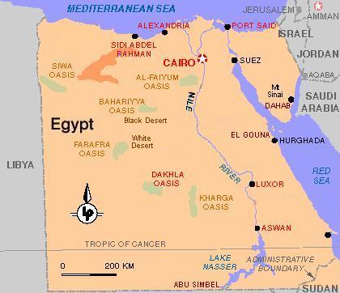

Egypt 1
Reflections of Egypt
December 25, 2002 to January 19, 2003

Cairo -> Bahariyya Oasis -> Black Desert -> White Desert -> Cairo -> Aswan -> Abu Simbel -> Luxor -> El Gouna -> Dahab -> Cairo
Kerala
Kerala's definitely a born traveler
the last night we were in Egypt we thought we'd treat Kerala to McDonald's however her response was "no McDonald's, we can get that anytime, we should have kushari as we won't be able to get it again"
Kerala picked up quickly on Arabic words and numbers, the Egyptians especially enjoyed it when she said "insha' Allah" meaning "God willing"
by the end of the trip it was Kerala saying "la' shukran" to vendors wishing to sell us something, she would go on to explain that "we've already been on one" or "we'd like to walk" or "we're leaving tomorrow" or "we're too tired" or "we've already had dinner" or "we're not hungry now"
in response to everyone saying "Welcome to Egypt" or "Welcome to Cairo", Kerala told us of her plan for when she returns to Canada - "when I see a person who looks, say Chinese, I'm going to say "Welcome to Canada"" - we've told her that you can't do that in Canada as that Chinese looking person is probably Canadian
we walked from morning until late at night at a good pace and Kerala kept up, never once complaining and it was probably a lot more difficult as the hurdles (garbage, puddles, curves, ....) would be relatively larger for her to maneuver around/over
if there was a mountain to climb Kerala was up it, in the noon day heat of the Valley of the Kings or in the chilling breeze at the summit of Mount Sinai
Kerala was up for trying out snorkeling and was thrilled that the scuba diver below waved back, even without a proper fitting wet suit Kerala was up for the off shore (cooler water) snorkeling
have horse, donkey, camel she'll travel
Kerala picked up on the art of haggling, sometimes Daddy would have to tell her not to as it was disrupting the transaction process
Kerala liked the idea of wearing a head scarf when we visited a Mosque so much that she continued to wear it all around Cairo
sleeping; now that she's slept on a plane, a bus, a train she wants to sleep on a boat - she found Mommy to be a comfortable bed "you're comfy Mommy"
each toilet Kerala and Mommy would approach as a challenge to overcome, luckily, except for the train one, there were no disgusting ones
Kerala was in heaven with her collection of sticks, stones and shells
Kerala's favorite deity is Isis; she would search for statues of her everywhere we went
Kerala constantly saying "Pretend we're ...... " - most of the time that we lived in the days of the Pharaohs
Kerala became well versed in Ancient Egypt and could pick out an ankh (key of life) and rhyme off the various steps of the burial process
it was only looking at photos after the trip that Kerala noticed in surprise that her friends have much darker skin
Kerala would provide other travelers with advise, for example: "you don't want to sleep in a tent when you're on the desert as you won't be able to look up at the stars"
Egypt
people; the warmth and friendliness of the Egyptian people, realization of how strong the word "welcome" is
Nile; appreciating the significance of this water source, feluccas, rowers, choreographed dinghies, party boats with search and/or neon lights, fishing, ferries, irrigation system, farming, clash of the green against the desert brown
Dress; modest dress (long sleeve loose top and pants), taking two pairs of long pants and one pair of shorts for the resorts worked well, there was never a need to wear head scarf even when visiting the Mosque of Qaitbey - it was us that insisted that us girls cover our heads, our observation of dress was that 90% of women were wearing the hijab, 5% no head coverage and 5% hijab with some sort of veil, most women wore abeyyas or long sleeve loose long dresses or long skirts, outside Cairo most men had something on their head either a Muslim cap, Arab type turban or scarf, as well outside Cairo a greater proportion of men wore galabiyyas (robe)
Baksheesh; alive and well especially with guards/soldiers and so called "guides"
Sheesha; Kerala burnt by one, Mommy and Daddy under strict orders from Kerala to brush our teeth twice before bed after smoking
food and drink; bottled water pricing 1.5 to 2 Egyptian pounds (55 cents Canadian) is reasonable, Stella and Saqqara beer, Fanta for Kerala, Turkish coffee, karkedy, depriving ourselves of risky salad, kushari (cost 3 Egyptian pounds (80 cents Cdn) to feed the family), pretzel shaped bread (sinet?), shish tawouq, falafel, kebabs, Maries (digestive biscuits - our staple when we travel)
Canadian dollar; converting quotes in US$ of Euros to Egyptian pounds and then Canadian dollars (multiply by 4 and drop a decimal place), suffering from the weak Canadian dollar, thank goodness for ATMs
Toilets; mostly western style some elephant foot, secret is to visit the western hotels or restaurants when nature calls, prize for worst was first class toilet on train Cairo to Aswan (15 hours) would have preferred elephant foot instead of quasi western style
Call to Prayer; as was expected 5 times a day including at the crack of dawn, fortunately it was not blaring into our hotel rooms, in the one hotel in which we were in close proximity we wore earplugs to bed, mosque in Dahab seemed to have the nicest singer
Gifts to Kerala; chocolate bars, bottles of pop, necklaces, candies, papyrus book marks, scarab good luck charms, Egyptian flute (argul), camel ride, felucca ride, henna, Nubian village visit, candle to light in Church, ....
Arabic; "la' shukran" (no thank you), "shukran" (thank you), "shukran gazilan" (thank you very much), as per usual David was intrigued with the language and became more daring with good morning, good evening,.... that the Egyptians joked about him speaking Arabic, the three of us played read the numbers, ...
there is a handy phrase when you don't wish to commit to purchase something or come to the shop the next day was "insha' Allah" (may God willing) - Kerala loved to say that one
Phone calls home; phone card purchase an adventure but then finding a pay phone in a relatively quiet area was always a challenge
Accommodations; booking through the internet is the way to go, able to book 5 star hotels/resorts at a fraction of the price (but don't tell too many people); Kerala stayed free and always had a couch, bed or cot to herself; all hotels except for the Sheridans included breakfast; difficulty haggling with taxis waiting outside these hotels as they assumed they could request high fee therefore we usually hired taxis away from the hotel
Security: the appearance of heavy security everywhere . . . to enter any hotel you must go through a metal detector, but after the first hotel we stayed in ignored the beeps, we started ignoring the metal detectors . . to enter certain parts of the Cairo central station one had to pass through metal detectors, of course once we took a shortcut and came directly in through a hole in the back fence . . . at the Egyptian Museum David needed to check his Swiss Army knife
Other Travelers; unique interesting people who were just wonderful with Kerala, we were very fortunate, North American tourists were rare
Sickness; able to avoid on the most part, David was fighting something at day 13, three of us popped Imodium's on day 19 - potent pills they are; before heading to Egypt we made sure our regular shots were current and went for Hep A and Immune Globulin - 500 kr ($109) each for David and I and 375 kr ($82) for Kerala.
mosquitoes; not really an issue, we saw a few and Kerala and David had a few bites (still not sure from what) during our stay, we put on insect repellent once and in a few hotel rooms plugged in the insect repelling disc
weather; rain one day in Cairo and a half an hour while watching the Pyramid Sound and Light show, wore jacket in evening, wouldn't have wanted it any colder in desert over night, all other days warm and sunny, above average temperatures
overnight travel; saves on the cost of a night's accommodation and no waste of sightseeing time, ensure have water, munchies, ear plugs, eye mask, warm clothes/sleeping bag for the trip
arrival; the Thomas Cooke kiosk clerk was quite excited to do business with us until he found out that we weren't going to give him US$ (we told him we didn't have any although we did and were keeping them for an emergency) to purchase the visa stamp, even though MasterCard and VISA stickers were mounted on the window they didn't take them so David had to be escorted passed the passport control to use an ATM, the taxi ride from the airport was very exciting as the taxi had to be pushed by the other taxi drivers to get it to start, there are no seat belts, the driver honks even when there's no one on the road, no headlights are on, no respect for the lane markings, ...., tips for arrival - bring water and food from home to have available upon arrival, ensure get caffeine fix, nice not to suffer from jet lag coming from Denmark
posters of President Mubarak along the streets and in hotel lobbies
camera and video charges; if you wished to take photos there were camera charges of $4 Cdn but the charge for video cameras was stupid, something like $40-$50 Cdn